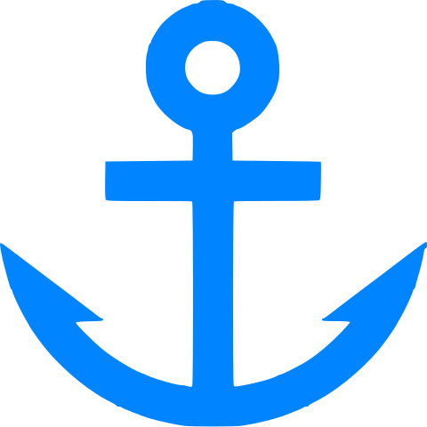

ITAhM
ITAhM은 Infrastructure Topology Administration Module (기업 IT 시스템 토폴로지 관리 모듈)의
약어 로써 이에 high performance, hyper등으로 설정할 수 있는 h를 더한 서비스의 이름 입니다.
한글로는 "아이탐" 입니다.
Module은 아이탐의 향후 확장 계획을 내포하고 있습니다.
구성
- 에이전트: 자바 응용프로그램. 다음과 같이 구성되어 있습니다.
- snmp 서비스
- database
- http 서버
- User Interface: http://itahm.com
설치
- 서비스가 시작되고 데이터가 저장될 폴더를 생성합니다. (예. c:\Users\홍길동\itahm)
- 다운로드 페이지 (http://itahm.com/download.html) 를 통해 최신의 jar 파일을 폴더로 다운로드 합니다.
- 에이전트를 실행 합니다. java -jar ITAhM.1.3.3.11.jar (유닉스 계열은 background로 실행)
- 홈페이지에서 agent의 IP와 TCP 주소를 입력하여 접속합니다.
database
database 관리
모든 변경된 database는 동기화를 통해 agent에 반영되고 공유됩니다.
장비
- 장비의 생성/수정/삭제는 topology map에서 수행합니다.
- 다른 database들과 달리 생성과 수정이 독립적입니다.
- 동기화 되지 않은 장비는 다른 장비와 링크를 연결할 수 없습니다.
- topology의 변경 또한 동기화를 통해 에이전트에 저장됩니다.
프로파일
- 새로운 프로파일을 생성하는 방법은 기존 정보를 수정하여 복사하는 것입니다.
- 키값은 profile name 입니다.
- 기존 정보에서 profile name을 변경하고 ip, udp, community를 수정하면 새로운 정보가 생성됩니다.
계정
- 새로운 계정을 생성하는 방법은 기존 정보를 수정하여 복사하는 것입니다.
- 키값은 username 입니다.
- 기존 정보에서 username을 변경하고 비밀번호를 수정하면 새로운 정보가 생성됩니다.
아이콘
- 새로운 아이콘을 생성하는 방법은 기존 정보를 수정하여 복사하는 것입니다.
- 키값은 type 입니다.
- 기존 정보에서 type을 변경하고 group과 이미지 경로를 수정하면 새로운 아이콘이 생성됩니다.
- restore 수행시 아이탐이 제공하는 기본값으로 초기화 되거나 삭제 됩니다.
유의사항
- 아이탐의 기본 기능인 구성관리와 차트서비스는 새창에서 실행되므로 팝업을 허용해 주어야 합니다.
- 에이전트를 실행시킬수 있도록 서버에 자바가 설치되어 있어야 합니다.
- 일부 오래된 버전의 브라우저에서 차트가 느리게 동작 할 수 있습니다.
브라우저를 업그레이드 하거나 크롬을 사용해 보세요.
- shutdown 수행시 신중해야 합니다.
일단 에이전트가 종료되면 통신 할 수 없기때문에 직접 서버에 접속해 에이전트를 다시 시작해야 합니다.
- 에이전트는 스스로 ip 127.0.0.1, tcp 162, community public 의 정보를 가진 노드를 등록합니다.
에이전트 실행 전에 snmp 클라이언트를 활성화 해 주세요.
- 이동식디스크등 물리적인 장치의 추가 및 삭제시 관리 index가 변경되어 이전 데이터를 잃게 될 수 있으니 유의 하십시오.
기능 버튼
- database 수정사항 동기화.
 topology map 에서 장비 목록을 확인.
topology map 에서 장비 목록을 확인.
- topology map 에서 장비 추가.
- topology map 확대 (마우스 scroll up)
- topology map 축소 (마우스 scroll down)
- 선택 장비의 성능 차트로 이동
- 선택 장비의 정보 확인 및 수정
-  선택 장비를 다른 장비와 링크 연결
- 차트 기간 선택시 달력 컨트롤 사용
- 차트 기간의 (from, to) 변경 허용
- 차트 기간 고정. (예. from 허용, to 고정 우측드래그: 이전 시간으로 축소)